Good morning, San Francisco... looks like Karl the Fog didn’t get the invite this morning. Nothing but blue skies ahead. You know you love it. xoxo
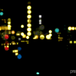

Good morning, San Francisco... looks like Karl the Fog didn’t get the invite this morning. Nothing but blue skies ahead. You know you love it. xoxo
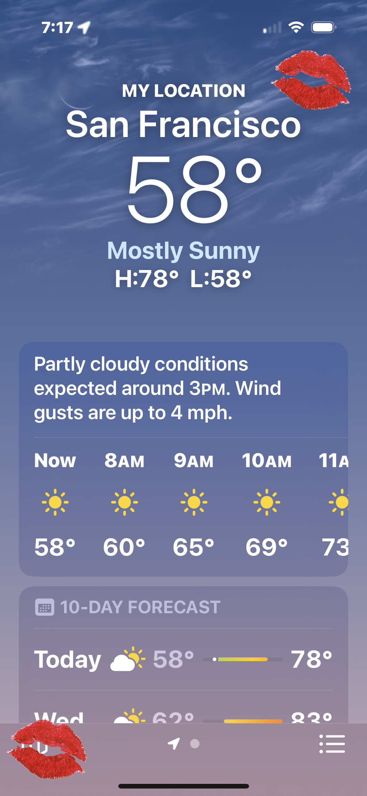
Spotted: S checking in on M. Someone’s not feeling her best today. Concerned best friend or just looking for an excuse to stay glued to her phone? xoxo
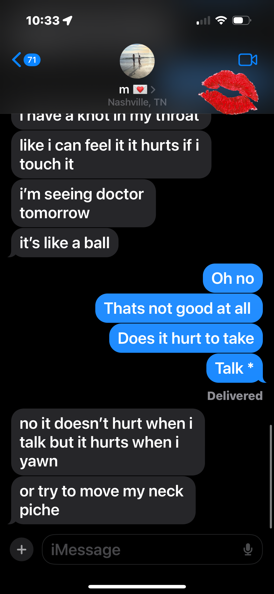
Uh oh, S. Looks like the inbox finally caught up with you. You can run, but you can’t hide from unread emails forever. xoxo
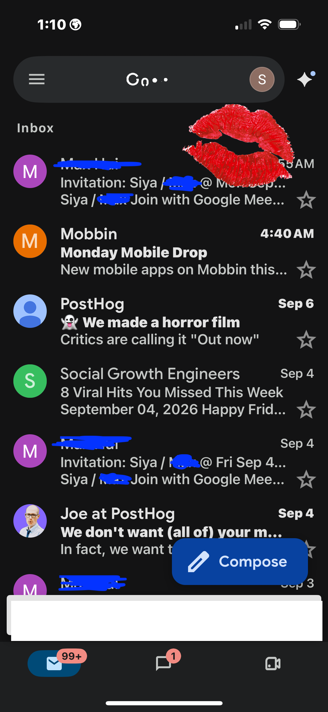
Come back to Earth, S. A meeting with the boss is calling. Let’s hope she has more prepared than a cute outfit and a prayer. xoxo
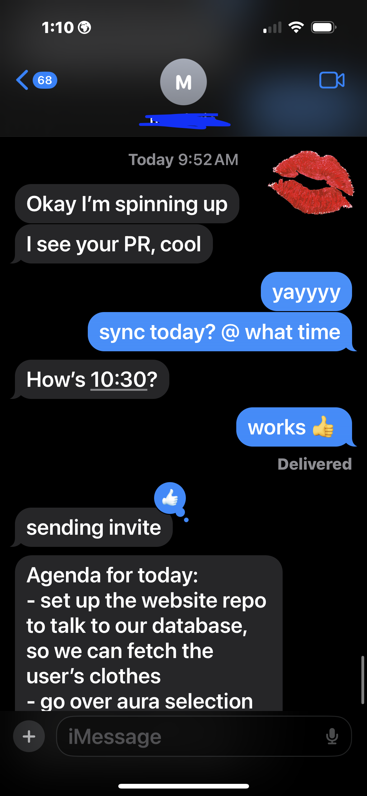
Spotted: S tapping her Clipper card and disappearing underground. Where is she headed? Your guess is as good as mine. xoxo
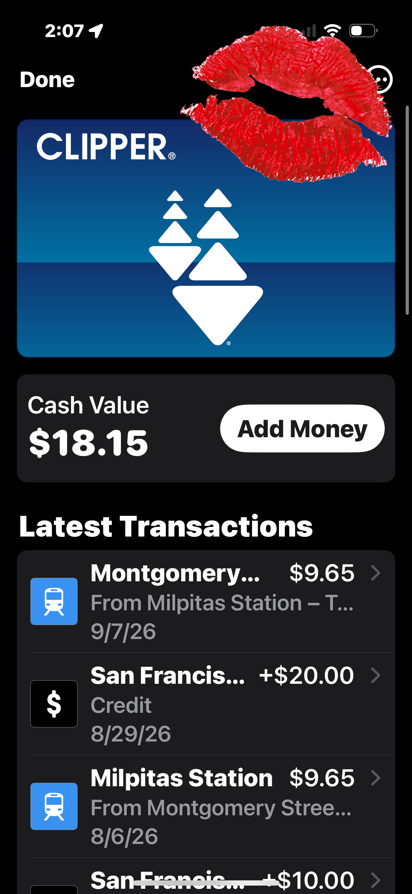
Spotted: S deep in a Pinterest spiral. With a birthday getaway approaching, apparently finding the dress is now a full-time job. xoxo
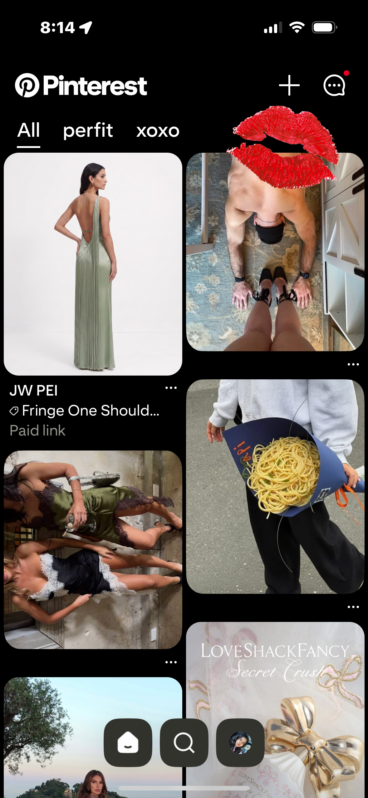
Uh oh, S. Looks like this audition didn’t end with a callback. Rejection stings, but something tells me she won’t stay down for long. xoxo.
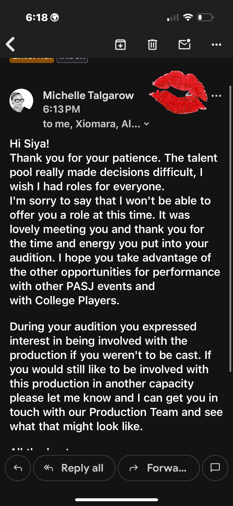
Bonjour, S. Or should we say... streak saved. Nothing like a little green owl guilt-tripping you into becoming bilingual. xoxo
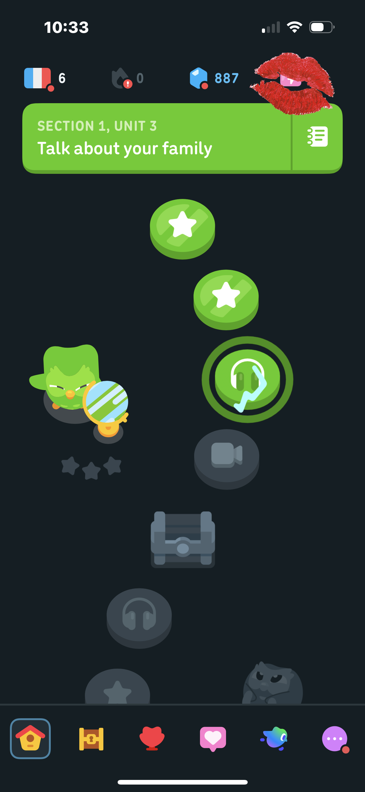
Back on Pinterest, S? At this point the birthday dress has become a citywide investigation. Will she ever choose one? Only time—and her algorithm—will tell. xoxo
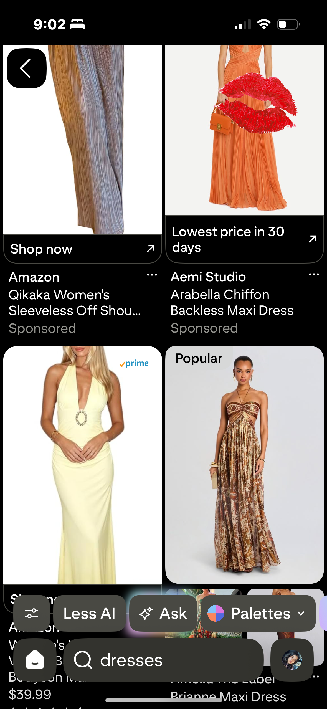
Headphones in, world out. S has officially turned her BART ride into a music video. Main character syndrome? We’ve seen worse. xoxo
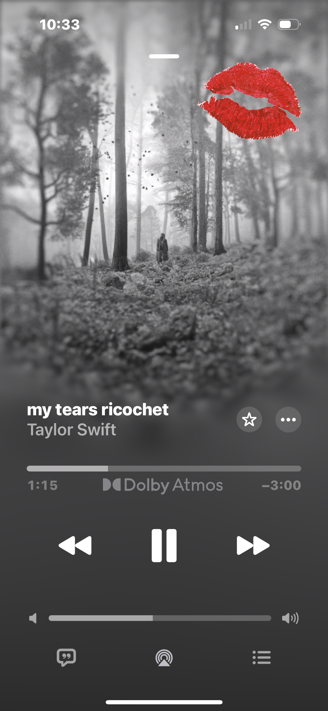
Spotted: S trading BART views for LinkedIn updates. Because apparently the career grind doesn’t stop underground. xoxo.
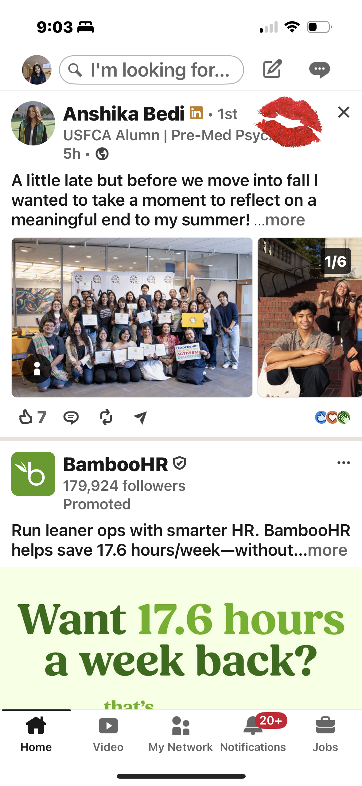
New car, new soundtrack. S is letting the aux set the mood while someone else handles the directions. How convenient. xoxo
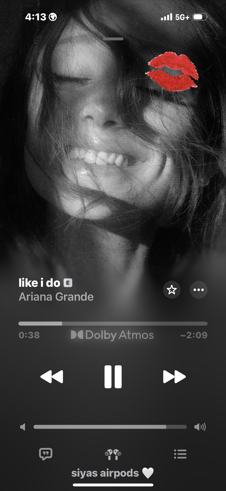
And there she goes... one TikTok became ten, ten became fifty, and suddenly S has no idea where the last hour went. A tale as old as the For You Page. xoxo
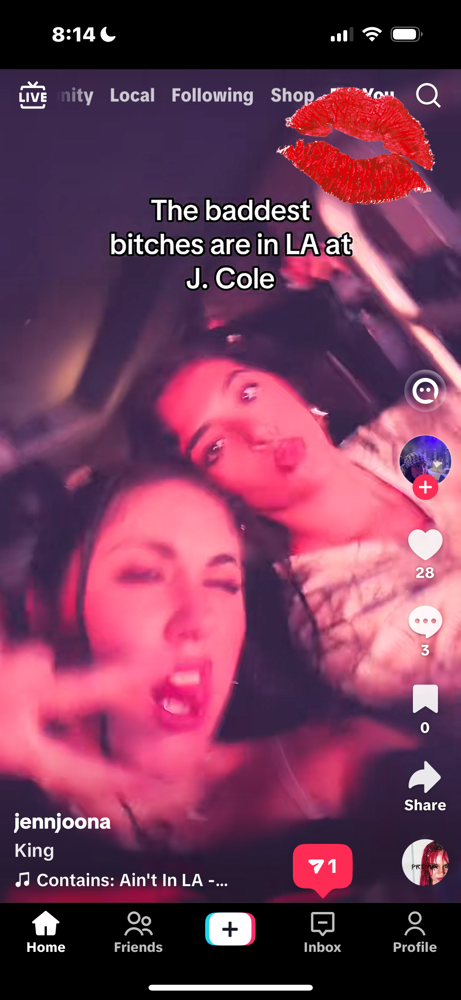
Spotted: S calling it a day and Ubering back home. Even our leading lady has to make her exit eventually. xoxo.
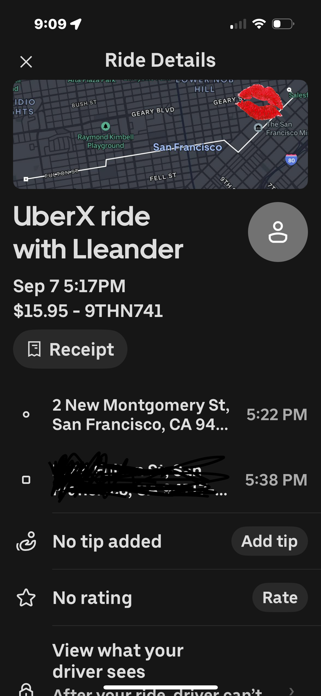
Back to M again, S? Some conversations apparently need an all-day running commentary. xoxo.
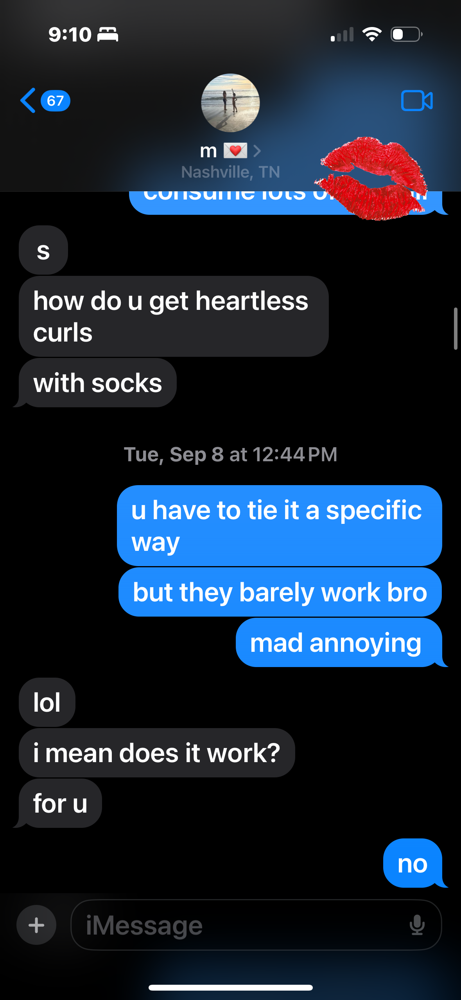
Spotted: S checking in with Mom and Dad. Because no matter how far she wanders, some calls are non-negotiable. xoxo.
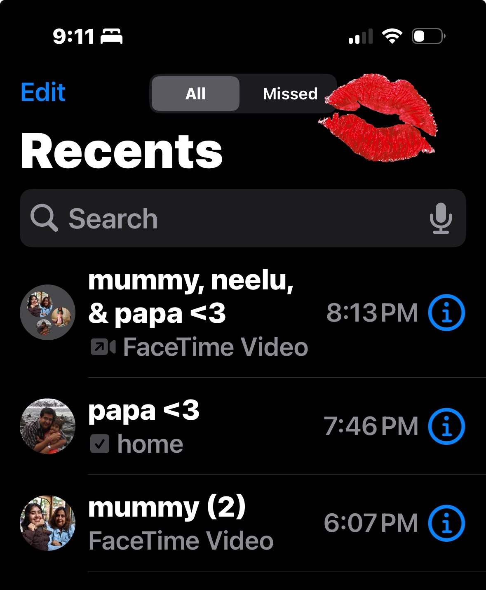
And that’s a wrap. Alarm set, phone down, and S is officially off the clock. Same time tomorrow? You know you’ll be watching. xoxo.
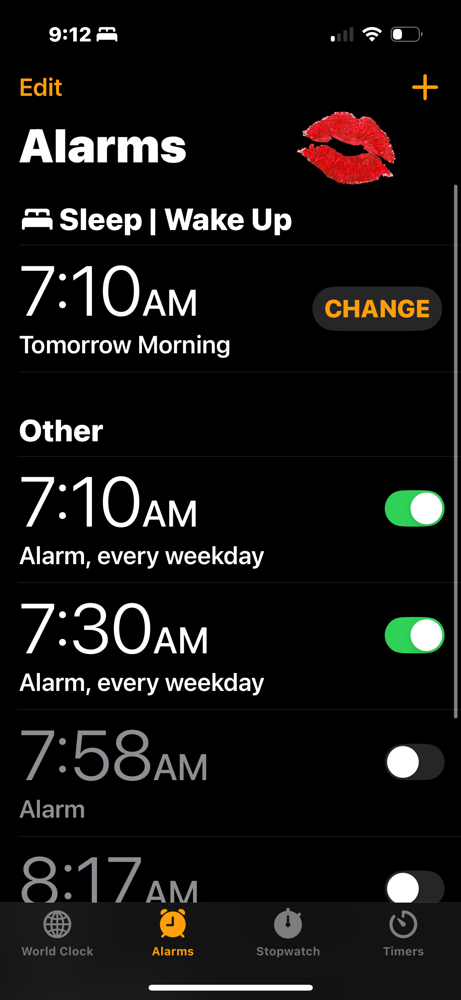